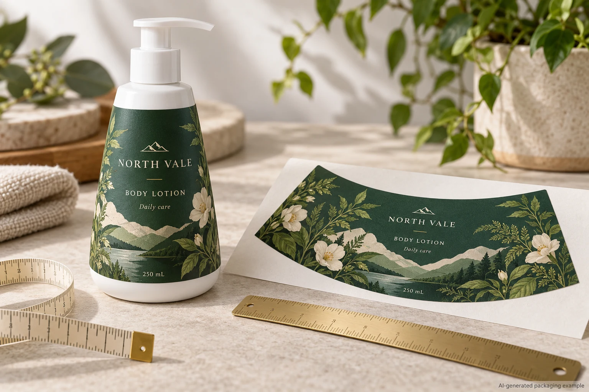
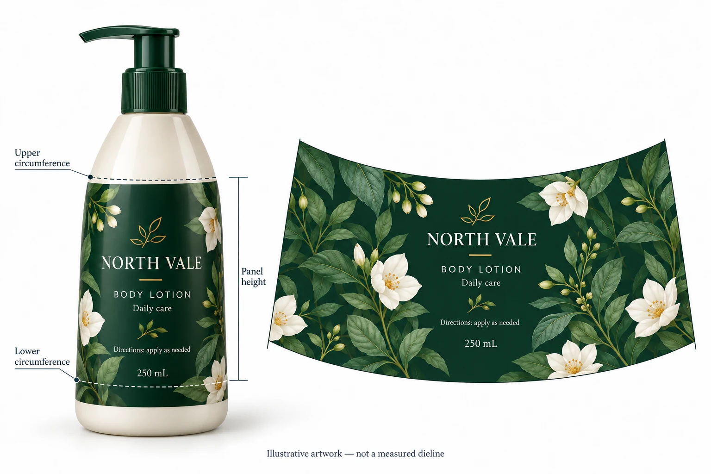

A wrap that measures correctly at the middle of a bottle can still drift when it is applied. On a tapered bottle, the top and bottom of the proposed label area have different circumferences. A straight rectangle may not follow that changing surface as the designer intended.
Before approving the artwork, decide whether the label can sit within a sufficiently straight panel, whether a shorter front-and-back set is more practical, or whether the wrap needs a shaped dieline. Check that decision on the actual container with a full-size mockup. A curved outline is a starting proposal, not proof that a finished film label will apply cleanly.

Find the usable panel before measuring
Fit the cap or pump to the intended bottle. Mark the upper and lower boundaries where the label should sit, keeping the design away from shoulders, base transitions, mould features and grip recesses. Photograph the front and side. If there are multiple container versions, identify which physical bottle the measurements belong to.
Measure the circumference at the upper and lower boundaries with a flexible tape, and record the vertical distance between them. Take each measurement around the surface at its own level; do not infer the lower circumference from the bottle's stated capacity. Record units and who measured the bottle. The numbers describe the proposed panel, not the final cutting dimensions.
A bottle can have an almost straight central section and a pronounced shoulder. If the desired label fits entirely on the straight section, a rectangular label may be the simpler choice. If the branding needs to extend across a changing circumference, a tapered outline deserves review. For an oval bottle or a compound curved surface, top and bottom circumference alone may not describe the shape well enough; ask the converter how it wants the physical sample and geometry supplied.
Compare three layouts on the same bottle
| Candidate | When to investigate | What to check before approval |
|---|---|---|
| Rectangle on the straight section | Usable flat-height band leaves enough space for the required design | Actual-size paper placement, top and bottom clearance, readable copy and seam position |
| Separate front and back labels | The front identity can stay concise and copy can move to the back | Both panels fit their intended positions; line or hand application can place each label consistently |
| Shaped wrap | The brand needs a wider wrap over a tapered panel | Proposed curve follows the bottle, seam lands as intended, copy remains legible and the applicator can handle the construction |

These choices are not ranked by appearance alone. A shorter rectangular label may leave more exposed packaging but be easier to place. A shaped wrap can retain more of the visual concept, but may require a custom dieline and a production check. Ask for pricing and production implications for the exact alternatives; do not assume a custom shape always costs a particular amount.
Build a mockup that can reveal the problem
Avery describes a practical wrap-and-cut method: wrap paper around the product, mark the desired edges, cut, then refit and refine it. For a tapered wrap, mark where the top and bottom edges should sit while the paper is on the bottle. Mark the front centre and the intended seam as well. Open the paper, trace the outline and identify the bottle and label version on the mockup.
Give that reference to the designer or converter with the upper and lower circumference, panel height and front and side photographs. Ask for an actual-size proposed dieline. Print it at 100% scale without automatic page fitting and check a known measurement on the printout before cutting. Place the paper back on the same bottle and compare its top, bottom, front centre and seam with the marks.
If the top edge follows the desired line but the lower edge crosses the base transition, do not simply stretch the artwork to hide it. Record the feature and request a revised panel height or outline. If the brand can accept a smaller design, test a rectangle in the straight band alongside the shaped option. If neither test leaves enough room for required copy, reassess the layout or container before commissioning production artwork.
Paper is useful for visual fit, not a substitute for a finished adhesive sample. It does not establish adhesion, flexibility, application speed or how a particular film and finish behave on the filled package.
Put the decision into a review record
| Input or observation | Record it | Use it to decide |
|---|---|---|
| Bottle identity | Supplier reference, revision, cap/pump and a representative physical container | Whether everyone is reviewing the same pack |
| Panel | Upper and lower circumference, panel height, units, marked boundaries | Whether a straight band is plausible and what the dieline request must describe |
| Mockup | Dieline revision, print scale, front centre and seam photographs | Whether the geometry and visible layout need correction |
| Artwork | Required copy, barcode area and approval version | Whether the proposed panel leaves usable space at actual size |
| Application | Hand or machine, operator and proposed roll format | Whether the application team can review the shape and delivery arrangement |
| Finished sample | Material, adhesive, finish and exact bottle, with review conditions agreed by the responsible parties | Whether the proposed construction can proceed beyond an appearance-only mockup |
Start with the first three rows. If the bottle reference or scale is unknown, remeasure before asking for final artwork approval. If the seam moves into critical copy, revise the layout or placement. If the shape looks right in paper but the application team has not reviewed the intended material and line, keep the production approval open. Record who owns each outstanding decision rather than treating a designer's screen proof as a packaging release.
Hand off the shaped label as a production question
A converter needs more than a photograph of a curved label. Send the bottle reference, the two circumference measurements and panel height, the marked paper shape, the current artwork and quantity for each design. Include the intended application method and any roll requirements known to the applicator. Ask the converter to confirm the dieline and explain what finished sample and application review are needed for the proposed material.
For a wider starting comparison, the bottle label size guide covers straight-cylinder sizing and initial panel measurement. If your chosen wrap overlaps itself, review the separate overlap seam decision: the closing edge may contact the printed label face rather than the bottle.
For a project-specific discussion, see custom cosmetic bottle labels and use the quote form to prepare a message with the container reference, measurements, quantity by artwork and application method. Send your marked mockup and artwork separately by email or WhatsApp. The form prepares a message; it does not automatically upload those files.
Technical reference: Avery, How to Measure Label Size for Your Product. Its paper wrap method and note about tapered containers inform the fit exercise; they do not validate a particular label construction.